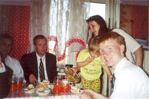

<- Back

My name is Chris Marchant, I am from Rochester, New York, and yes,
I am
an American. Like most Americans, I have mixed ancestry, but to
the best of my knowledge, not a single one of my ancestors emigrated to
the United States from Eastern Europe, let alone Belarus or
Russia. In high school, I signed up for French because I was
required to take a language, and I hated it thoroughly, and even failed
it one year. I have always loved science and technical things, so
when I started college at Brigham Young
University, I declared my major
to be Electrical Engineering.
As of March 11th, 1999, the only
Russian phrase that I knew was "dah sveedanyah" and I thought it meant
'hello'. That Wednesday, at 2:00pm, I entered the Provo
Missionary Training Center as a missionary for the Church
of Jesus Christ of Latter-day
Saints.
 I am a member of
the Church of
Jesus Christ of Latter-day Saints, also known as "the Mormons." I
believe very sincerely certain things, including that God loves us
personally and answers our prayers, that God still gives us revelation
through prophets, and that we are happy when we know that our lives are
in line with God's will. After my first semester of college, I
volunteered to be a full-time missionary for the Church. I took
a deferrance from my university, my family agreed to pay for my support
while I would be gone, and the Church asked me to serve a mission
preaching the Gospel in Lithuania.
As a missionary, I received no
compensation other than the spiritual kind.
I am a member of
the Church of
Jesus Christ of Latter-day Saints, also known as "the Mormons." I
believe very sincerely certain things, including that God loves us
personally and answers our prayers, that God still gives us revelation
through prophets, and that we are happy when we know that our lives are
in line with God's will. After my first semester of college, I
volunteered to be a full-time missionary for the Church. I took
a deferrance from my university, my family agreed to pay for my support
while I would be gone, and the Church asked me to serve a mission
preaching the Gospel in Lithuania.
As a missionary, I received no
compensation other than the spiritual kind.
 Most of the
missionaries the
Church sends to Lithuania learn
to speak Lithuanian
(of course), but as
there are significant Polish and Russian minorities, I was asked to
learn Russian.
I spent two months in the states receiving 6 hours
of intensive language instruction daily. This was not really
enough but one cannot ride with training wheels forever and I was sent
off to Lithuania. I love and miss Lithuania. I miss how
people would tell us they were not interested in talking about
religion, but would still invite us in to offer us cookies and kvass on
a hot summer day. I miss the way little kids would try to teach
us Lithuanian. I miss Uzupis,
rokiskio cheese and the little
chocolate cupcakes you can buy in Vilnius.
Most of the
missionaries the
Church sends to Lithuania learn
to speak Lithuanian
(of course), but as
there are significant Polish and Russian minorities, I was asked to
learn Russian.
I spent two months in the states receiving 6 hours
of intensive language instruction daily. This was not really
enough but one cannot ride with training wheels forever and I was sent
off to Lithuania. I love and miss Lithuania. I miss how
people would tell us they were not interested in talking about
religion, but would still invite us in to offer us cookies and kvass on
a hot summer day. I miss the way little kids would try to teach
us Lithuanian. I miss Uzupis,
rokiskio cheese and the little
chocolate cupcakes you can buy in Vilnius.
During my time in Lithuania, I learned to speak
Russian passably. I learned my grammar by reading a grammar
reference I had been given while still in the states, and I learned
vocabulary by talking to people and looking up words I didn't know in
the dictionary (if I could remember them). It was a little
difficult to read Russian because I saw it so little. There were
several words, like 'barbershop', that I knew in Lithuanian, but not in
Russian. There were other oddities in my
Russian. I knew, for example, what 'khloptsy' were, but not
'parny.' Lithuanians would get upset when I spoke Russian with
them. They would ask why I would not learn Lithuanian since I was
in Lithuania. It is rude to come to someone's country, to ask to
speak with them, and then to ask them to speak with you in a foreign
tongue.
 I had been
in Lithuania for a year, when I was asked to serve in Belarus. I
had heard stories about the country from other missionaries who had
come back from there and was... excited. I knew it was a lot
poorer than Lithuania, a lot more dangerous, and most ominous of all,
that it was a dictatorship,
unfriendly to the west.
I had been
in Lithuania for a year, when I was asked to serve in Belarus. I
had heard stories about the country from other missionaries who had
come back from there and was... excited. I knew it was a lot
poorer than Lithuania, a lot more dangerous, and most ominous of all,
that it was a dictatorship,
unfriendly to the west.
In Belarus,
there is a law that a religious
organization can only have missionaries if it has national
registration. National registration is essentially impossible to
obtain, even if an organization fulfills the requirements of the law,
the bureaucracy will stonewall the religion's efforts to obtain
recognition. Russian Orthodoxy
and Roman Catholicism are
nationally recognized by the government, but not other religions.
Because of this, when I went to Belarus, I did not go as a missionary,
but as a humanitarian aid worker. I was a representative of the
International Charitable Public Association "Sofia." I did not
represent the Church, I did not carry a missionary name-tag, I never
introduced myself as a missionary. If, during conversation, a
Belarusian brought up the topic of religion, I would discuss it with
him, but I would never bring it up on my own.
I spent nine months living in the city of Vitebsk,
with three other Americans. The organization we did work for,
"Sophia", would occationally receive shipments of clothing and food
from the states and if that happened we were to help verify that it was
distributed properly, but for some reason, the shipments were held up
for many months. The main work that we were supposed to do was to
present assemblies in elementary schools. We would put on puppet
shows acting out situations involving tobacco and alchohol and we would
discuss the scenes with the kids. The guys in Minsk would
do this
every day, but although we technically had permission to put on the
assemblies in Vitebsk schools, the bureaucracy would stonewall us and
we were unable to.
When I first entered Belarus, I was fascinated
because everywhere there were signs in Belarusian.
It was first
of all wierd to see cyrillic, but more than that I could not understand
many of the words, and the endings on the words did not make
sense. During my nine months in Vitebsk, because there was no
work for us, the only thing for us to do was hang out with the
locals. I spent a lot of time with a small family, the Gusakovy. The mother, Larisa, was very kind to
us. She essentially was my mother while we stayed there.
Her son Ilya was a terror and the first time he met anyone, he would
try to punch them in the crotch. Little Liza was just
adorable,
I miss her. She was only 3 and had trouble saying my name, she
would call me 'Masan', and after I left, she would call all the
Americans 'Masan.'
Larisa had been a teacher of Belarusian before she
had kids, and I think that's what first get me wanting to learn
Belarusian. There was this old man, we called him "Dedushka", to
this day we don't know his real name, and we would go out to his
village and help him work out there. He had nine goats and the
milk he got from them was very good, much better than the nasty stuff
one could buy in the store. It was very difficult for me to
understand him because he always spoke in 'trasyanka', a mix of Russian
and Belarusian.
This one time, Dave Beck somehow came into contact
with this TV reporter, a young women in her twenties, and she wanted to
interview him for a piece on the news. I met her later and was
talking to her and I noticed that her grammar wasn't quite right, and I
asked her about it. She admitted that at home she spoke
Belarusian. I had always before this assumed that Belarusian was
only spoken by old folks in the villages, but here was a young person
who preferred Belarusian, speaking it home. That is when I knew
that Belarusian had not died yet.
I was uprooted from Belarus and asked to spend the
last three months of my mission in Yaraslavl, Russia. It was
heartbreaking to leave Vitebsk. I cried when I got on the
train. My accent had changed, it was hard to say "mnoga"
instead of "mnoha." I missed the Gusakovy really bad. In
Russia though, I was able to wear my nametag again and be a
missionary. That felt really good.
After I returned from my mission, there were a few
months before the start of the next semester when I could go back to
school. I read a book about James
Murray and the creation of the
Oxford English Dictionary. The
biggest obstacle to the creation
of the dictionary was creating an exhaustive list of every word in the
language together with illustrative examples of its usage. I
returned to
college and I was taking this computer science class on data
structures, and while I was falling asleep one night, I had a
realization that I could make a computer program that would catalogue
the entire Belarusian language for me. I wrote the program the
next summer and now I have a concordance
containing virtually every
word in the Belarusian language, with usage.
It is beyond my abilities to create a dictionary out
of this monsterous
concordance.
There are simply too many words,
and the fact is that my belarusian is not even close to good enough for
me to do it. I was
able to use it to create a grammar guide. The concordance shows
me how common a word is so I was able to determine the definitive
formation of words. I wrote Fundamentals of Modern Belarusian,
my friend Hanna Badruseva helped correct it, and then I received a
grant from Brigham Young University
to go to Belarus to finish
it. There, Valentsina Rusak, a professor of Belarusian at the
National Academy of Sciences, thoroughly went over the guide,
correcting it as best as she could. Now it is posted here.
As an electrical engineer, I believe in the power of open-source.
Fundamentals
of Modern
Belarusian is free. Anyone may change, improve or
redistribute it, even for profit (if they can find someone willing to
pay, HAH!) The concordance is also distributed as
open-source. It is beyond me to create an entire dictionary out
of it, but if others participate, it is possible to create a complete,
definitive, and free Belarusian-English dictionary.
Currently, I am attending Utah State University, where I am
getting my doctorate degree in Electrical
Engineering.
<- Back